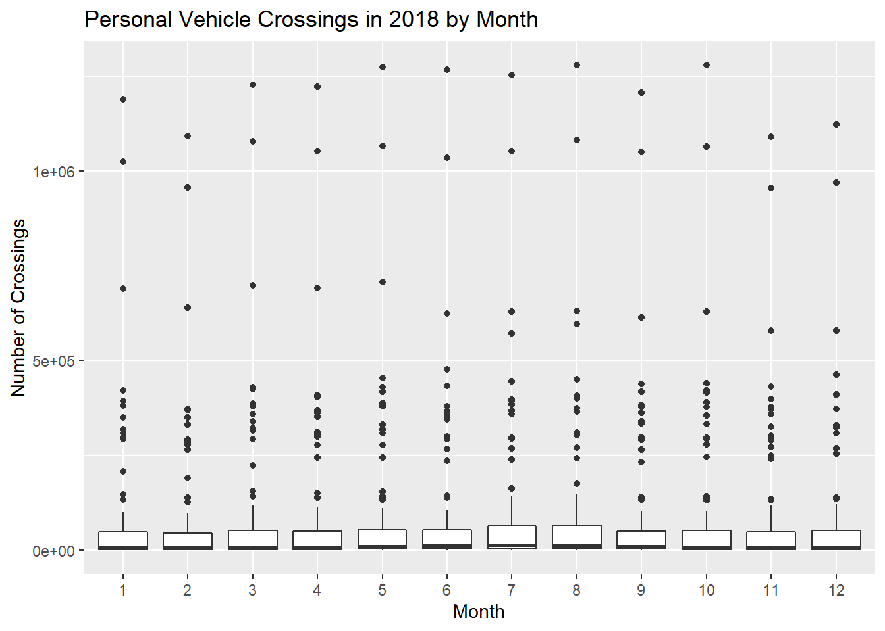
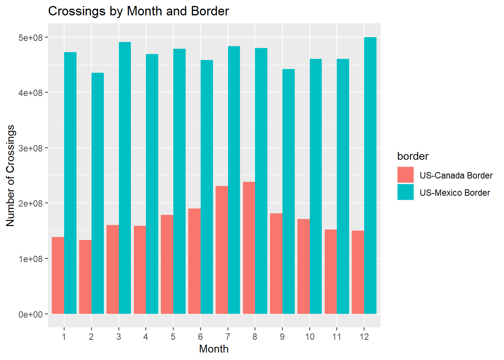
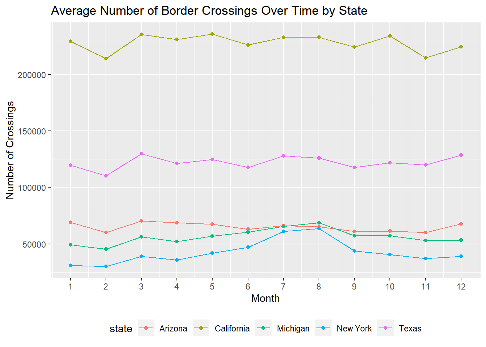
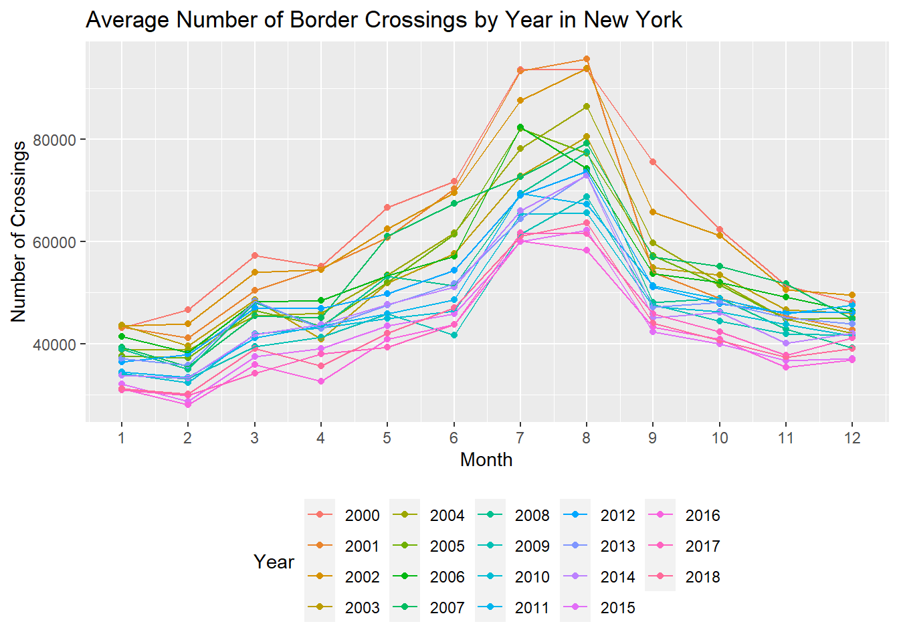

Reading in the border crossing data:
port_name) in Maine and Idaho. Create a port_name_state variable instead so there is no confusionborder_crossing_df = read_csv(file = "./Border_Crossing_Entry_Data.csv") %>%
janitor::clean_names() %>%
mutate(date = str_sub(date, end = -13),
location = str_replace(location, "POINT ", ""),
port_name_state = str_c(port_name, state, sep = "_")) %>%
separate(date, into = c("month", "day", "year"), sep = "/", convert = TRUE) %>%
select(-day, -port_name) %>%
separate(location, into = c("long", "lat"), sep = " ") %>%
mutate(long = str_replace(long, "\\(", ""),
lat = str_replace(lat, "\\)", ""),
long = as.numeric(long),
lat = as.numeric(lat)) %>%
filter(year >= 2000, year < 2019, value != 0)## Parsed with column specification:
## cols(
## `Port Name` = col_character(),
## State = col_character(),
## `Port Code` = col_double(),
## Border = col_character(),
## Date = col_character(),
## Measure = col_character(),
## Value = col_double(),
## Location = col_character()
## )Findings from tables below:
## Border crossings by month
border_crossing_df %>%
group_by(month) %>%
summarize(n = sum(value))## `summarise()` ungrouping output (override with `.groups` argument)## # A tibble: 12 x 2
## month n
## <int> <dbl>
## 1 1 611107875
## 2 2 568690871
## 3 3 651409308
## 4 4 628266842
## 5 5 658004778
## 6 6 648545701
## 7 7 714405951
## 8 8 718551827
## 9 9 623220080
## 10 10 631347754
## 11 11 612730589
## 12 12 649952890## Border crossings by year
border_crossing_df %>%
group_by(year) %>%
summarize(n = sum(value))## `summarise()` ungrouping output (override with `.groups` argument)## # A tibble: 19 x 2
## year n
## <int> <dbl>
## 1 2000 540021542
## 2 2001 493083902
## 3 2002 475702818
## 4 2003 456392653
## 5 2004 458220298
## 6 2005 450234268
## 7 2006 440296022
## 8 2007 417587175
## 9 2008 399902033
## 10 2009 359451762
## 11 2010 344246536
## 12 2011 332226000
## 13 2012 344503916
## 14 2013 356218438
## 15 2014 363314116
## 16 2015 365219998
## 17 2016 367484183
## 18 2017 372971276
## 19 2018 379157530## Border crossings by state
border_crossing_df %>%
group_by(state) %>%
summarize(n = sum(value))## `summarise()` ungrouping output (override with `.groups` argument)## # A tibble: 15 x 2
## state n
## <chr> <dbl>
## 1 Alaska 11573060
## 2 Arizona 715509023
## 3 California 2056017209
## 4 Idaho 17215550
## 5 Maine 174217600
## 6 Michigan 557354352
## 7 Minnesota 77081223
## 8 Montana 43232599
## 9 New Mexico 58338762
## 10 New York 653477192
## 11 North Dakota 63229290
## 12 Ohio 373
## 13 Texas 2804141437
## 14 Vermont 91600402
## 15 Washington 393246394## Border crossings by measure
border_crossing_df %>%
group_by(measure) %>%
summarize(n = sum(value))## `summarise()` ungrouping output (override with `.groups` argument)## # A tibble: 12 x 2
## measure n
## <chr> <dbl>
## 1 Bus Passengers 113548058
## 2 Buses 6904908
## 3 Pedestrians 859594269
## 4 Personal Vehicle Passengers 4189113375
## 5 Personal Vehicles 2068077007
## 6 Rail Containers Empty 19082028
## 7 Rail Containers Full 34186220
## 8 Train Passengers 5149980
## 9 Trains 735791
## 10 Truck Containers Empty 54526962
## 11 Truck Containers Full 154262783
## 12 Trucks 211053085## Border crossings by port
border_crossing_df %>%
group_by(port_name_state) %>%
summarize(n = sum(value)) %>%
arrange(desc(n))## `summarise()` ungrouping output (override with `.groups` argument)## # A tibble: 117 x 2
## port_name_state n
## <chr> <dbl>
## 1 San Ysidro_California 961771552
## 2 El Paso_Texas 879953412
## 3 Laredo_Texas 514981282
## 4 Buffalo-Niagara Falls_New York 426670702
## 5 Hidalgo_Texas 421612662
## 6 Brownsville_Texas 403087196
## 7 Otay Mesa_California 383875040
## 8 Calexico_California 380156649
## 9 Detroit_Michigan 353224718
## 10 Nogales_Arizona 323086640
## # ... with 107 more rows## Border crossings by border
border_crossing_df %>%
group_by(border) %>%
summarize(n = sum(value))## `summarise()` ungrouping output (override with `.groups` argument)## # A tibble: 2 x 2
## border n
## <chr> <dbl>
## 1 US-Canada Border 2082228035
## 2 US-Mexico Border 5634006431Potential Visuals:
## Boxplot
#Just look at 2018 and personal vehicles for example here
border_crossing_df %>%
filter(year == 2018, measure == "Personal Vehicles") %>%
group_by(month) %>%
ggplot(aes(x = as.factor(month), y = value)) +
geom_boxplot() +
labs(title = "Personal Vehicle Crossings in 2018 by Month",
x = "Month",
y = "Number of Crossings")
## Bar plot
border_crossing_df %>%
group_by(month, border) %>%
summarize(n = sum(value)) %>%
ggplot(aes(x = as.factor(month), y = n, fill = border)) +
geom_bar(stat = "identity", position = 'dodge') +
labs(title = "Crossings by Month and Border",
x = "Month",
y = "Number of Crossings")## `summarise()` regrouping output by 'month' (override with `.groups` argument)
## Average values over time for top 3 states in 2018
border_crossing_df %>%
filter(state %in% c("Texas", "California", "Arizona", "New York", "Michigan"), year == 2018) %>%
group_by(state, month, year) %>%
summarize(mean_value = mean(value)) %>%
ggplot(aes(x = month , y = mean_value, color = state)) +
geom_point() +
geom_line() +
theme(legend.position = "bottom") +
scale_x_continuous(limits = c(1,12), breaks = c(1:12)) +
labs(title = "Average Number of Border Crossings Over Time by State",
x = "Month",
y = "Number of Crossings")## `summarise()` regrouping output by 'state', 'month' (override with `.groups` argument)
## For this one, we can have a drop down option for state. will show just for New York now
border_crossing_df %>%
filter(state == "New York") %>%
group_by(month, year) %>%
summarize(mean_value = mean(value)) %>%
ggplot(aes(x = month , y = mean_value, color = as.factor(year))) +
geom_point() +
geom_line() +
theme(legend.position = "bottom") +
scale_x_continuous(limits = c(1,12), breaks = c(1:12)) +
labs(title = "Average Number of Border Crossings by Year in New York",
x = "Month",
y = "Number of Crossings",
color = "Year")## `summarise()` regrouping output by 'month' (override with `.groups` argument)